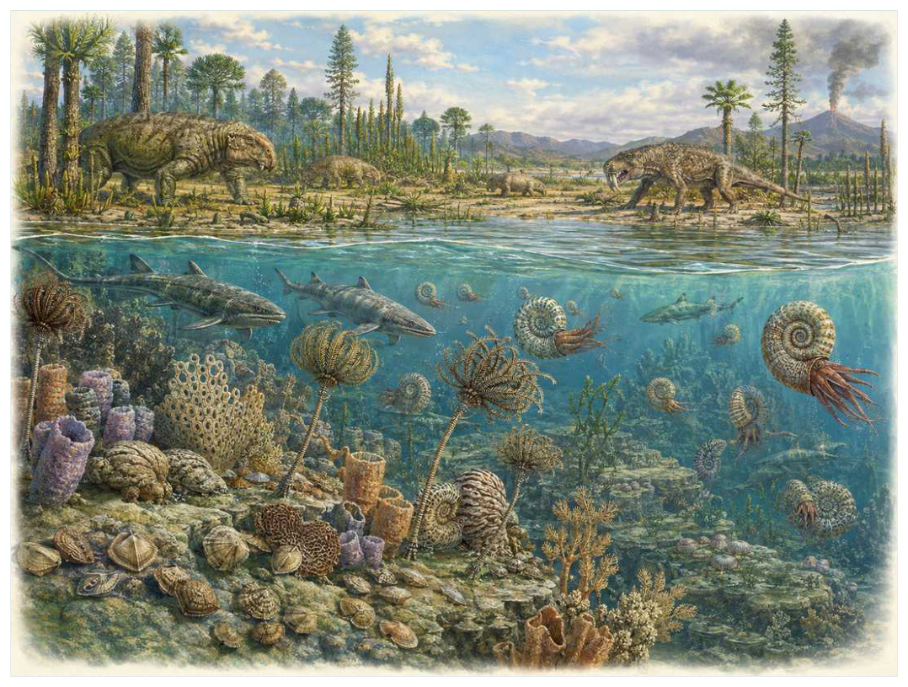

第10篇 · 二叠纪大灭绝：生命史最大危机 · 第 32 章
危机之前：二叠纪海洋和陆地究竟失去了什么
本篇主题:二叠纪大灭绝：生命史最大危机
火山活动、升温、缺氧和生态网络崩溃把复杂世界压到最低点。

本章科学复原配图 （用于呈现结构与生态关系, 不替代化石照片、测量数据与系统发育证据。）
晚二叠世末，约2.54亿至2.519亿年前对应的世界与现代地图和气候都不同。理解它不能从一只明星物种开始，而应从整个系统的限制开始。二叠纪末大灭绝之所以被称为生命史最大危机，不只是因为物种比例高，而是它切断了延续数千万年的生态结构。海洋中，腕足动物、苔藓虫、海百合、四射珊瑚、床板珊瑚、纺锤虫和三叶虫组成底栖与礁体网络；陆地上，二齿兽、丽齿兽、兽头类、离片椎类与多种植物形成成熟食物网。理解灾难必须先看清被删除的功能，而非只背灭绝名单。
进入这个时代
生态系统的真实声音不是巨兽咆哮，而是持续的摄食、分解、搬运和繁殖。每一具尸体、每一层落叶和每一次沉积扰动都会重新分配资源。危机前的热带浅海拥有复杂碳酸盐台地，滤食者把水中颗粒转入底栖食物网，礁体制造缝隙和硬底；内陆河谷则由大型植食者和捕食者维持能量流。系统已经高度专门化，也因此依赖稳定温度、氧气、酸碱度和季节节律。
在“危机之前：二叠纪海洋和陆地究竟失去了什么”所覆盖的时间里，不能把地理与气候当作固定背景。海陆位置、海平面、河流或植被结构会改变资源可达性，同一性状在不同地区可能得到完全相反的选择结果。
以危机之前：二叠纪海洋和陆地究竟失去了什么为例，亲缘与外形不能混为一谈。相似身体可能来自共同祖先，也可能来自趋同；过渡类型也不是两类动物的机械拼接，而是当时能够正常摄食、运动和繁殖的完整生物。 在本章中，这一约束具体落在“礁体构建者创造的空间支撑大量附生与躲藏物种”这条关系上。
再从晚二叠世末，约2.54亿至2.519亿年前的时间尺度看，演化的单位是种群而不是单个英雄。个体结构影响生存，但地理分布、繁殖速度、幼体死亡率和种群规模决定变异能否保留下来。化石中最醒目的成年骨架，未必是决定支系命运的阶段。 它与“古生代礁体工程”共同决定了后续变化可以沿哪些路径发生。
生态系统如何运转
把“礁体构建者创造的空间支撑大量附生与躲藏物种”放进食物网，可以看到它不是孤立行为。它会影响种群密度、栖息地使用和尸体进入分解链的速度，并把后果传给并未直接参与互动的物种。
围绕“礁体构建者创造的空间支撑大量附生与躲藏物种”，还要考虑空间异质性。一项在浅海、河谷或林冠有效的策略，移到深水、干旱内陆或开阔地便可能失去优势。因此同一支系常出现区域性扩张，而不是全球同步取代。 对危机之前：二叠纪海洋和陆地究竟失去了什么而言，这一后果还会与“底栖滤食者连接浮游生产和海床”相互放大或抵消。
理解“底栖滤食者连接浮游生产和海床”需要区分个体事件与长期压力。偶然一次捕食只改变个体命运，持续数千代的稳定关系才可能推动牙齿、外壳、感觉器官或生活史发生方向性变化。
围绕“底栖滤食者连接浮游生产和海床”，这一机制也会留下间接证据：咬痕、修复伤、足迹密度、粪化石、牙齿磨损和群落年龄结构分别记录不同环节。只有多种证据方向一致，行为解释才应上调可信度。 对危机之前：二叠纪海洋和陆地究竟失去了什么而言，这一后果还会与“陆地大型植食者把植物生产转入捕食者与分解者网络”相互放大或抵消。
“陆地大型植食者把植物生产转入捕食者与分解者网络”还会改变可利用空间。一个支系若能进入新的水深、植被高度或沉积层，竞争会暂时减弱；随后追随者、捕食者和寄生者又会把新空间变成新的互动网络。
围绕“陆地大型植食者把植物生产转入捕食者与分解者网络”，从演化树看，相似关系可能在远亲中反复出现。功能相近不必意味着近缘，而同一祖先结构也可能被后代改作完全不同的用途；生态解释必须与系统发育互相校验。 对危机之前：二叠纪海洋和陆地究竟失去了什么而言，这一后果还会与“礁体构建者创造的空间支撑大量附生与躲藏物种”相互放大或抵消。
关键演化创新
在“危机之前：二叠纪海洋和陆地究竟失去了什么”中，围绕“古生代礁体工程”，讨论“古生代礁体工程”时，最重要的问题是它解除哪一道限制。只要原有身体在运动、摄食、呼吸或繁殖上受约束，能够稍微缓解约束的变异就可能积累，最终产生看似跃迁的结果。 它首先需要在晚二叠世末，约2.54亿至2.519亿年前的生态条件下产生可测量收益。
就“古生代礁体工程”而言，化石能较可靠地记录硬组织形态，却很少直接保留基因调控与短时行为。因此结构出现通常可信，最初用途和选择路径则应按证据标为主流解释或合理推测。 本章把它与“复杂底栖悬浮摄食”并列，是为了显示复杂性状往往依赖多部分协同。
在“危机之前：二叠纪海洋和陆地究竟失去了什么”中，围绕“复杂底栖悬浮摄食”，从共同选择角度看，“复杂底栖悬浮摄食”可能先服务旧功能，后来才参与今天最熟悉的用途。把最终功能倒推成起源原因，会把演化误写成有目的的工程。 它首先需要在晚二叠世末，约2.54亿至2.519亿年前的生态条件下产生可测量收益。
就“复杂底栖悬浮摄食”而言，其宏观影响往往滞后于结构起源。一个创新可以先在小型、稀少支系中存在数百万年，直到环境变化或竞争者灭绝后才迅速扩张；“出现”和“成为主导”是两个不同事件。本章把它与“大型合弓类陆地食物网”并列，是为了显示复杂性状往往依赖多部分协同。
在“危机之前：二叠纪海洋和陆地究竟失去了什么”中，围绕“大型合弓类陆地食物网”，讨论“大型合弓类陆地食物网”时，最重要的问题是它解除哪一道限制。只要原有身体在运动、摄食、呼吸或繁殖上受约束，能够稍微缓解约束的变异就可能积累，最终产生看似跃迁的结果。 它首先需要在晚二叠世末，约2.54亿至2.519亿年前的生态条件下产生可测量收益。
就“大型合弓类陆地食物网”而言，这也提醒我们不要寻找单一关键基因。复杂性状由多个组织和调控网络协调，改变任何一环都可能产生不同结果，演化路径因此呈树状而非直线。 本章把它与“古生代礁体工程”并列，是为了显示复杂性状往往依赖多部分协同。
生命群像：把物种放回生态网络
纺锤虫（Fusulinida）
纺锤虫（Fusulinida）是石炭纪至二叠纪末的一名真实生态成员，而不是通往后代的抽象过渡。它约有毫米至厘米级，以暖浅海底栖有孔虫和碳酸盐生产者的方式获取资源；纺锤形多室壳体可高密度组成石灰岩反映了其祖先历史与局部选择压力共同留下的结果。
对纺锤虫而言，它既可能是捕食者、植食者或工程者，也同时是其他生物的猎物、竞争者和分解资源。一次取食只是一瞬，长期生态影响来自成千上万个体反复搬运营养、改变植被或扰动沉积物。体型越大，这种工程效应通常越明显，但恢复速度也常越慢。 这使“纺锤形多室壳体可高密度组成石灰岩”不能脱离其暖浅海底栖有孔虫和碳酸盐生产者角色来理解。
判断它的生活方式时，研究者首先使用全球地层分布清楚记录其在二叠纪末消失，是重要生物地层标志。随后会检验替代解释：同样的牙是否也能处理其他食物，同样的骨骼比例是否由年龄造成，同一骨层是否来自群体生活还是灾难性聚集。排除过程比贴标签更重要。
由纺锤虫这个案例看，过去的复原常受完整现代动物模板影响，新材料则迫使研究者接受更陌生的身体比例或生活方式。最稳妥的表达是保留估计区间，并明确哪些软组织、颜色和社会行为仍属合理推测。 它在石炭纪至二叠纪末留下的记录，因此同时是第32章所讨论的形态史和生态史的一部分。
四射珊瑚（Rugosa）
若把镜头从时代拉近到个体，四射珊瑚（Rugosa）会首先进入视野。它生活于奥陶纪至二叠纪末，体型约单体毫米级，群体可达米级。作为礁体构建与悬浮摄食，它依靠放射状隔壁和钙质骨骼构成古生代礁体成员与环境和其他生物发生关系。
对四射珊瑚而言，成年体型往往主导复原，但幼体可能使用完全不同的食物和栖息地。若成长阶段跨越多个生态位，种群就同时依赖多套环境；其中任一环节中断都可能导致长期衰退。化石骨床的年龄结构因此比单具最大标本更能说明生态。 这使“放射状隔壁和钙质骨骼构成古生代礁体成员”不能脱离其礁体构建与悬浮摄食角色来理解。
关于它的直接依据是：连续地层显示冠群在边界灭绝，后来的六射珊瑚不是其直接幸存形态。研究者还必须确认骨骼是否属于同一个体、是否被水流搬运、压扁是否改变比例，以及不同大小是否只是成长阶段。只有解剖、地层和功能证据相互一致，复原才可上调为高可信。
由四射珊瑚这个案例看，它在生命史中的价值不在于离现代形态还有多远，而在于证明这一身体组合曾真实可行。即使没有直系后代，支系也可能在当时持续繁盛，并通过捕食、植食或栖息地工程改变其他生命的选择环境。 它在奥陶纪至二叠纪末留下的记录，因此同时是第32章所讨论的形态史和生态史的一部分。
床板珊瑚（Tabulata）
床板珊瑚（Tabulata）存在于奥陶纪至二叠纪末。现有材料显示其大小约群体厘米至米级，生态位置接近浅海礁体构建者。密集小管状个体和横板形成块状群体让它成为理解本章主题的合适案例，但不意味着同一类群所有成员都采用相同策略。
对床板珊瑚而言，这种生活方式还会反向塑造环境。摄食改变植物或猎物结构，足迹和掘穴改变沉积，尸体和排泄物把营养集中到局部。生态位不是它进入的固定房间，而是它与其他生物共同建造并持续修改的关系网络。 这使“密集小管状个体和横板形成块状群体”不能脱离其浅海礁体构建者角色来理解。
现有认识建立在与四射珊瑚同时消失，展示礁体功能被整体重置之上。古生物学的可信度不是来自一件戏剧化标本，而是来自多件标本、多个地点和不同方法得到相容结果。新发现若改变比例或分类，并非此前研究毫无价值，而是证据边界被重新画清。
由床板珊瑚这个案例看，从生态尺度看，它与本章其他成员共同维持一张网络。任何“最强”排名都会遗漏资源供应、幼体死亡、疾病和气候脉冲；真正决定长期成功的是种群能否在波动中不断完成繁殖。 它在奥陶纪至二叠纪末留下的记录，因此同时是第32章所讨论的形态史和生态史的一部分。
最后的三叶虫（Proetida）
在寒武纪至二叠纪末，最后的三叶虫（Proetida）以约多为厘米级的身体参与食物网。它不是孤立的“明星生物”，而是海底爬行、食腐或沉积物取食者；在此前多次灭绝中幸存的最后一目三叶虫决定它能利用哪些资源，也决定必须承担哪些成本。
对最后的三叶虫而言，相似环境可能让远亲出现相近轮廓，但内部结构会保留祖先限制。比较它与现代类比时，应只借用可检验的功能，不把现代动物的行为、社会制度或代谢水平整套复制到古生物身上。 这使“在此前多次灭绝中幸存的最后一目三叶虫”不能脱离其海底爬行、食腐或沉积物取食者角色来理解。
支持该解释的材料包括全球边界记录支持彻底灭绝；它们并非因‘过于原始’消失，而是遭遇系统性环境危机。若不同证据出现冲突，应优先报告范围而不是强行给出单值。例如体长会随参照类群变化，运动能力会随软组织假设变化，系统位置也会随新增性状重新计算。
由最后的三叶虫这个案例看，它也展示专门化的双面性：结构在稳定环境中提高效率，却可能在气候、食物或竞争格局突变时限制转向。灭绝不是对设计的道德评分，而是性状、地理范围和偶然事件相遇后的历史结果。 它在寒武纪至二叠纪末留下的记录，因此同时是第32章所讨论的形态史和生态史的一部分。
正颌菊石类（Goniatitida）
认识正颌菊石类（Goniatitida）要先放弃静态骨架印象。它生活在泥盆纪至二叠纪，约壳径厘米至数十厘米，日常任务是作为水柱游泳捕食或食腐头足类维持能量与繁殖。简单缝合线和多样壳形支撑复杂水柱生态只是这一整套生活史中最容易化石化的部分。
对正颌菊石类而言，它既可能是捕食者、植食者或工程者，也同时是其他生物的猎物、竞争者和分解资源。一次取食只是一瞬，长期生态影响来自成千上万个体反复搬运营养、改变植被或扰动沉积物。体型越大，这种工程效应通常越明显，但恢复速度也常越慢。 这使“简单缝合线和多样壳形支撑复杂水柱生态”不能脱离其水柱游泳捕食或食腐头足类角色来理解。
我们之所以能够作出上述判断，主要因为大量支系在危机中消失，少数近亲为三叠纪菊石辐射保留种源。单一结构通常有多种功能解释，所以还要查看磨损、病理、肌肉附着、沉积环境和近缘比较。计算模型能排除不可能姿势，却不能自动恢复没有保存的软组织。
由正颌菊石类这个案例看，面对仍有争议的细节，负责任的复原不是停止讲述，而是标注证据等级。形态、年代和亲缘可较确定，具体姿势、叫声、求偶和群猎则按材料降级；新标本会在这些边界内继续改写认识。它在泥盆纪至二叠纪留下的记录，因此同时是第32章所讨论的形态史和生态史的一部分。
因果链：环境、生态与性状
从时间顺序看，“古生代礁体工程”的最早记录不等于它立即改写生态系统。结构可能先以小幅变异出现在稀少支系中，经历很长的试验期，直到“礁体构建者创造的空间支撑大量附生与躲藏物种”所代表的资源条件或竞争格局改变，才出现可见的辐射。反过来，一个支系在化石记录中突然繁盛，也不证明关键结构刚刚产生；保存窗口打开、地理扩散或生态位释放都能造成类似图景。因此讨论晚二叠世末，约2.54亿至2.519亿年前的创新时，本章把“首次出现”“功能完善”“多样化”和“成为生态主导”分成四个问题，避免用一个日期替代整段历史。
在晚二叠世末，约2.54亿至2.519亿年前，身体不是若干部件的简单相加。“古生代礁体工程”只有与“大型合弓类陆地食物网”在供能、控制和发育上兼容，才可能稳定遗传；局部性能提高若超过呼吸、循环或支撑能力，整体反而失效。床板珊瑚的密集小管状个体和横板形成块状群体因此应放进完整身体比例中解释，而不是把某一器官单独夸大。生物力学模型可以估算受力和运动范围，组织学能限制生长速度，近缘比较能提示同源关系；三者相互校验，才有可能从静态化石走向一个能够活着完成日常活动的动物或植物。
种群层面的成功还要考虑波动，而不仅是平均状态。在资源丰富年份，“复杂底栖悬浮摄食”带来的高性能可能迅速增加个体数；在低谷年份，维持该结构的成本又会放大死亡。若四射珊瑚拥有较广食谱或可迁移，便可能跨过低谷；若其放射状隔壁和钙质骨骼构成古生代礁体成员高度依赖单一环境，恢复就更困难。化石群落中的丰度峰值、体型变化和地理收缩能为这种“繁荣—压力—恢复”循环提供线索，但必须与采样偏差区分。对晚二叠世末，约2.54亿至2.519亿年前的任何稳态描述，都只是长期波动中被岩层保存的一小段。
本章的因果链最终落在繁殖上。“底栖滤食者连接浮游生产和海床”改变个体获得资源和避开风险的方式，“古生代礁体工程”改变身体能做什么，但只有这些差异持续影响配子、胚胎、幼体和成体留下后代的概率，演化频率才会跨世代变化。纺锤虫和四射珊瑚的化石常让人关注尺寸或武器，然而巢、蛋、芽孢、孢粉、幼体壳和成长线往往更接近选择真正发生的位置。理解危机之前：二叠纪海洋和陆地究竟失去了什么，因此要把最壮观的成年结构重新接回完整生活史。
把“古生代礁体工程”拆成成本与收益，可以避免把演化创新写成无条件升级。它可能扩大摄食、运动或繁殖的边界，却要付出组织材料、发育协调和日常维持的代价；“复杂底栖悬浮摄食”又会改变这笔账在不同生命阶段的分配。对纺锤虫而言，纺锤形多室壳体可高密度组成石灰岩在成年阶段或许十分醒目，但种群能否延续仍取决于幼体是否能找到食物、是否有安全的生长场所以及环境波动后是否保留繁殖者。化石往往偏爱成年硬组织，因此书写晚二叠世末，约2.54亿至2.519亿年前时必须主动补上这些不易保存却决定长期命运的环节。
时代横截面：个体、种群与证据
证据强度也应逐句区分。灭绝前连续剖面的群落统计若直接记录形态或行为痕迹，可把某些可能性排除；功能多样性而非仅物种数的比较若来自模型或现代类比，则通常提供范围而非唯一答案。对床板珊瑚的密集小管状个体和横板形成块状群体，我们也许能高可信地描述结构，却只能以主流解释讨论功能，以合理推测讨论日常行为。把层级写出来不会削弱故事，反而让读者知道未来新发现最可能改动哪一部分。
把结构看作模块，可以解释为什么过渡类型常显得“新旧并存”。纺锤虫的纺锤形多室壳体可高密度组成石灰岩可能已经接近后来状态，而呼吸、繁殖或运动的其他部分仍保留祖征；四射珊瑚可能采用另一种组合达到相似功能。演化不要求所有部件同步改变，只要求每个阶段的完整个体能够生活和繁殖。正因如此，真实谱系会产生旁支、回退和多次独立试验，而不是教科书式直梯。
再把床板珊瑚加入横截面，群落关系会从两者比较变成网络。它作为浅海礁体构建者，通过密集小管状个体和横板形成块状群体连接资源与其他消费者；其数量变化可能同时影响纺锤虫和四射珊瑚，甚至改变分解链和营养循环。这样的间接效应很少能由一具骨架直接证明，却可以从物种共现、丰度、痕迹化石和环境指标中受到约束。危机之前：二叠纪海洋和陆地究竟失去了什么的生态复原因此需要群落数据，而不只是著名标本的精细解剖。
地理同样会拆散看似整齐的时代标签。晚二叠世末，约2.54亿至2.519亿年前并不是全球同时拥有同一种气候与群落：海盆深浅、纬度、山脉、河流和大陆隔离会让纺锤虫、四射珊瑚与床板珊瑚的分布错开。一个支系可能在某地区衰退、在另一地区成为避难所；后来扩散又会造成化石记录中的“重新出现”。因此本章的代表物种用于说明机制，而不意味着它们都在同一地点同一时刻相遇。
“谁取代了谁”常把复杂过程压成单线叙事。在危机之前：二叠纪海洋和陆地究竟失去了什么中，即使四射珊瑚在某层位后减少、床板珊瑚随后增加，也可能是二者分别响应气候或栖息地，而不是直接竞争导致淘汰。需要检查时间误差、地理重叠和资源相似度；只有三者都支持，替代关系才更可信。更多时候，生态系统通过功能重新组合过渡，旧支系与新支系会长期并存。
科学家为什么这样判断
“灭绝前连续剖面的群落统计”提供的是一类约束而非完整录像。它可能精确记录某一瞬间，却未必代表全年或整个物种；也可能反映长期平均，却无法指出单次行为。把不同时间尺度的证据组合，才能重建生态过程。
“功能多样性而非仅物种数的比较”还需要与年代学绑定。只有事件先后关系可靠，才能讨论因果；若环境变化和生物响应的误差范围大量重叠，就应表述为相关或可能机制，而不是宣布已经证明。
“牙齿、粪化石和植物群落重建陆地网络”最有价值的地方，是它能排除某些流行复原。关节不允许的姿势、承重无法支持的速度、与沉积环境冲突的生活方式，都可以被证据淘汰；剩余模型仍可能不止一个。
在“危机之前：二叠纪海洋和陆地究竟失去了什么”这一问题上，把上述方法合在一起，研究者才能从残缺材料走向受约束的复原。任何一条证据都可能受到成岩、污染、样本量或现代类比的限制；结论越具体，越需要多条独立证据指向同一方向，并与晚二叠世末，约2.54亿至2.519亿年前的地层背景相容。
过去的图景与今天的证据
海洋物种灭绝比例常被概括为九成以上，但不同统计方法、分类层级和采样校正会给出不同数值。更稳妥的是确认：多数海洋无脊椎动物谱系遭到极重打击，三叶虫、四射珊瑚和床板珊瑚彻底消失，许多生态功能在早三叠世长期稀缺。
围绕“危机之前：二叠纪海洋和陆地究竟失去了什么”，需要特别警惕新闻标题把“可能”“支持”改写成“已经证明”。古生物学很少能直接观察行为，越接近颜色、叫声、群居和捕猎策略，越应说明样本数量与替代解释。
对晚二叠世末，约2.54亿至2.519亿年前的材料而言，争议持续还因为不同问题需要不同尺度。个体生物力学、种群生态和全球气候模型无法互相替代；一个模型能解释骨骼受力，不等于已经解释整个支系为何扩张或灭绝。
跨尺度观察
微生物底盘：宏体生态依赖微生物完成分解、固氮和碳硫循环。即使章节聚焦巨型动物，尸体最终仍由微生物和小型分解者处理；大灭绝后的恢复也往往先表现为生产和分解网络重建，而非大型动物立即回归。 在“危机之前：二叠纪海洋和陆地究竟失去了什么”中，这一尺度具体连接了“礁体构建者创造的空间支撑大量附生与躲藏物种”与“古生代礁体工程”，因而不能只从单个成年标本判断。
尺度错觉：百万年足以让微小遗传差异累积成巨大的身体变化，数万年的快速事件又可在地质记录中近似一条细线。把深时间压缩会制造“突然出现”的错觉，因此正文同时报告持续时间和证据分辨率。 在“危机之前：二叠纪海洋和陆地究竟失去了什么”中，这一尺度具体连接了“底栖滤食者连接浮游生产和海床”与“复杂底栖悬浮摄食”，因而不能只从单个成年标本判断。
能量账本：任何大型身体、快速运动或高代谢都必须由初级生产支撑。食物从生产者进入消费者时会损失大量能量，因此顶级捕食者种群必然远少于猎物。环境变化若先削弱生产端，高营养级通常最早出现繁殖失败；这比单次搏斗更能决定支系命运。在“危机之前：二叠纪海洋和陆地究竟失去了什么”中，这一尺度具体连接了“陆地大型植食者把植物生产转入捕食者与分解者网络”与“大型合弓类陆地食物网”，因而不能只从单个成年标本判断。
通向下一个时代
从本章走向下一阶段时，需要保留的不是一串物种名，而是一个因果链：环境改变可用能量与栖息地，生态关系筛选性状，性状又反过来改造环境。接下来需要追踪的不是一颗单独子弹，而是一套由火山、温室气体、海洋缺氧、酸化与陆地生态退化相互放大的灾难链。
本章精选来源
- [R53] Burgess, S. D., Muirhead, J. D. & Bowring, S. A. Initial pulse of Siberian Traps sills as the trigger of the end-Permian mass extinction. Nature Communications 8, 164 (2017).
- [R55] Dal Corso, J. et al. Environmental crises at the Permian-Triassic mass extinction. Nature Reviews Earth & Environment 3, 197-214 (2022).
- [R56] Stanley, S. M. Estimates of the magnitudes of major marine mass extinctions in earth history. Proceedings of the National Academy of Sciences 113, E6325-E6334 (2016).
- [R57] Benton, M. J. & Newell, A. J. Impacts of global warming on Permo-Triassic terrestrial ecosystems. Gondwana Research 25, 1308-1337 (2014).
- [R58] Song, H. et al. Anoxia/high temperature double whammy during the Permian-Triassic marine crisis and its aftermath. Scientific Reports 4, 4132 (2014).